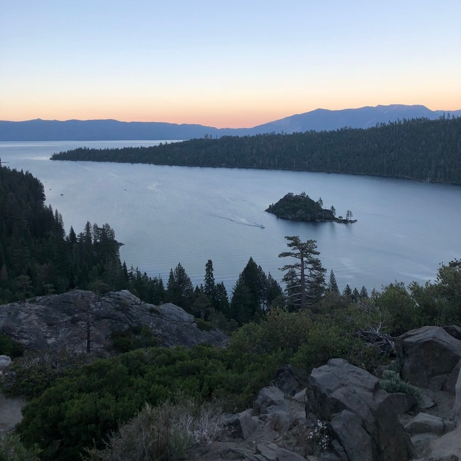

Kelly Jacobsen
I am currently a second year Political Science major at UC Riverside. After graduating with a Bachelors Degree in Political Science, it is my goal to attend law school. I am going to apply to a few different law schools, namely Harvard Law, Penn State, UC Hastings, and Florida State University. Post law school, I will join my father’s law firm, Aiken and Jacobsen: Attorneys at Law, in the hopes of one day taking over when he retires.
In all of my jobs, I look for a solid base of support and growth. I enjoy being challenged in whatever I do as I believe it is the best way to learn. I have a naturally strong and motivated attitude when it comes to my work. I never want to let people down and this causes me to always push myself to do the very best. I want people to recognize me as a hard worker from the moment I start a new job and maintain that perspective until my last day. I strive to be seen as key member of any team.
Through my job experience, I have work experience with communications, organization, fast-paced settings, and group oriented projects. I know how to work with large groups of different people and the best ways to come together even with so many varying ideas. I enjoy the challenge of this kind of task because it forces me out of my comfort zone and makes me confront differing opinions and ways of solving a problem. I love working in quick and constant environments because it always keeps you on top of your game. I am also a very organized person in my personal and work life. Many jobs and positions I have held focus on material and time organizational skills. I have learned throughout my life how to keep all aspects of my life balanced and organized so I never overstretch myself.
In addition to the jobs you will find listed below, I have also held a number of volunteer and school positions. In high school I held a number of Student Government positions: Freshmen Class VP, Sophomore Class President, Associated Student Body VP, and Associated Study Body President. I have also held a number of positions on the governing board for my sorority, Kappa Kappa Gamma, here at UC Riverside including Sunshine Chairman, House Chairman, and Philanthropy Chairman. All of these positions have taught me critical leadership skills that I use everyday. I utilize the skills gained from these positions to help me in all of my jobs and even school projects.
In my personal time I enjoy a great number of hobbies. In the warmer months I often find myself going scuba diving, hiking, water skiing, horseback riding, camping, and swimming. In the colder months of the year I like to go skiing, sledding, snowshoeing, and build an occasional snowman. I am a very active person outside my school work and enjoy any activity that allows me to be surrounded by nature. Aside from outdoor activities, I am also a keen baker, avid reader, and occasional dancer and singer.
Experience
File Clerk for Eric Ratinoff
• Helped facilitate communication between departments
• Organized multiple file rooms
• Scanned, faxed, and organized a multitude of legal documents
Park Aide
• Responsible for checking in campers
• Educated the public about surrounding wildlife
• Ensured the cleanliness of park facilities
Treasurer
• Created yearly budgets
• Helped plan weekly ski trips
• Ran fundraising events
Education
UC Riverside
Mira Loma High School
Portfolio
